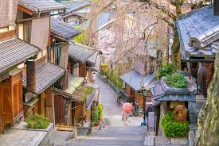

1. Kyoto, Japan
- Historic temples and shrines
- Traditional geisha culture
- Stunning cherry blossoms in spring
2. Ha Long Bay, Vietnam

- Beautiful limestone karsts
- UNESCO World Heritage Site
- Boat cruises and caves
3. Bali, Indonesia
- Stunning beaches and rice terraces
- Hindu temples and culture
- Popular for surfing and retreats
Want to explore more destinations? Visit Lonely Planet for guides and tips.